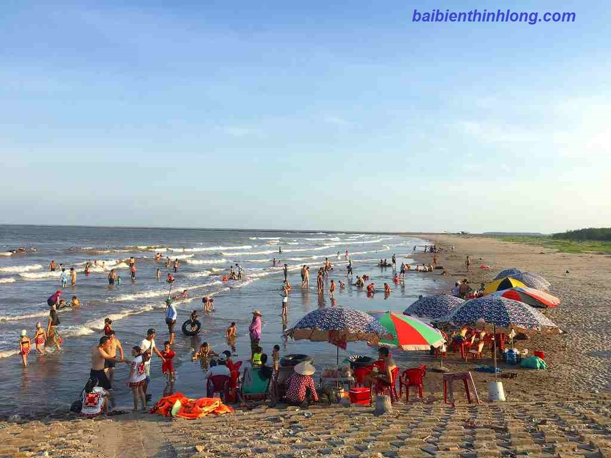
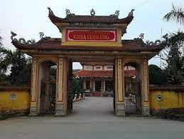
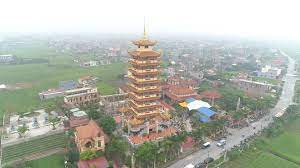

Biển Thịnh Long
Thịnh Long - Vùng biển với điều kiện tự nhiên khắc nghiệt, hiện nay đã và đang từng ngày phát triển là mũi nhọn trong nền kinh tế bền vững, đóng góp lớn vào công cuộc phát triển kinh tế và xã hội đối với huyện Hải Hậu nói riêng và tỉnh Nam Định nói chung. Với diện tích tự nhiên: 15.9km2 mặt phía nam tiếp giáp biển với chiều dài đê 7km, phía tây là con sông Ninh Cơ ngăn cách với huyện Nghĩa Hưng, phía bắc giáp xã Hải Châu, phía đông giáp xã Hải Hòa. Với vị trí địa lý thuận lợi từ xưa Thịnh Long được biết đến là khu du lịch mang vẻ đẹp hoang sơ, là địa điểm nghỉ mát lý tưởng vào những ngày nắng nóng và kỳ nghĩ dưỡng hoàn hảo dành cho gia đình, cơ quan, đoàn thể… Được thành lập năm 1956 (tách ra từ xã Hải Châu) lấy tên là Hải Thịnh (sau đó đổi tên thành Thịnh Long bây giờ). Với hơn 63 năm xây dựng và phát triển, trải qua các cuộc kháng chiến chống Pháp, chống Mỹ … từ một nơi có cơ sở vật chất hạn hẹp, đi lại còn khó khăn đến nay Thịnh Long đã có nhiều thay đổi, cơ sở hạ tầng được đầu tư, các khách sạn nhà hàng nối đuôi nhau tạo nên một cái nhìn hoàn toàn mới, không những đáp ứng được nhu cầu du lịch thời đại hơn nữa vẫn giữ được những nét văn hóa truyền thống đặc biệt nhất vẫn là lòng hiếu khách của người dân nơi đây. Đến với Thịnh Long bạn được cảm nhận lý thú về vùng đất con người cùng với trải nghiệm những danh thắng nổi tiếng sẽ tạo nên một kỳ nghỉ lễ thú vị và đáng nhớ cùng gia đình và bạn bè.
1 số kinh nghiệm khi đi du lịch tại Thịnh Long
1, Bãi tắm tại Thịnh Long
Bãi biển Thịnh Long được quy hoạch làm 2 khu tắm là Bãi 1 và Bãi 2.
Bãi 1 là khu vực tập trung nhiều nhà nghỉ và khách sạn lớn như Khách sạn Công Đoàn, Khách sạn Cty Dệt May là hai khách sạn lớn được xây dựng từ những năm đầu hình thành khu du lịch nghỉ mát Thịnh Long. Đằng sau bãi 1 cũng là những khách sạn lớn như khách sạn Hải Âu, nhà nghỉ Sơn Hằng, Kim Quy, Khách sạn Hải Long… (Tham khảo bài viết về các khách sạn) có điểm đặt của ngân hàng NNPTNT Agribank, một số nhà nghỉ và quán ăn khá nổi tiếng và chất lượng. Cùng với các nhà nghỉ dọc bãi biển phù hợp với cho các cá nhân, hộ gia đình hoặc tập thể dưới 15 người Vào mỗi mùa du lịch hầu như bãi 1 là nơi tập trung nhiều du khách ra tắm nhất. có bồi cát tương đối đẹp, ngay sát nhà nghỉ quý du khách có thể tận hưởng rõ hơn hương gió biển cùng với âm thanh của những con sóng xô bờ. Bãi 1 được quy hoạch căng dây khoanh vùng tắm an toàn nhằm cảnh báo du khách khi tắm không nên ra khỏi khu vực này. Vào mùa du lịch bãi 1 cũng được bố trí thêm đội cứu hộ an toàn, đảm bảo không để xảy ra các trường hợp tai nạn đáng tiếc khi lượng du khách tắm biển tăng quá đông.
Bãi 2 cũng có những nhà nghỉ dọc đường đê biển nhưng kém khách hơn bãi 1. Do ảnh hưởng của các cơn bão một số nhà nghỉ cuối bãi 2 đã không còn được sử dụng. Các nhà nghỉ ven biển bãi này có phòng và cơ sở vật chất như bãi 1 nhưng ít tập trung khách hơn nên giá thành nơi đây sẽ hạ nhiệt hơn 1 chút vào ngày cao điểm. Nếu bạn là cá nhân hay gia đình muốn yên tĩnh hoặc cần không gian nơi đây cũng là lựa chọn thích hợp. Trái lại khu vực sau bãi 2 là hệ thống nhà nghỉ khang trang, quán ăn phong phú như Khách sạn 3 sao Tân Thịnh, khách sạn Thiên Long, Khách sạn Hoàng Anh. Cuối bãi là quán phục vụ ăn uống Tuấn Bình cơ sở 2 (tham khảo thêm về quán ăn Tuấn Bình) được xây dựng trong một rừng cây phi lao có thể đáp ứng được cho những cuộc họp, meetup, buổi liên hoan, tổ chức sự kiện lớn với dịch vụ chuyên nghiệp cũng là nơi lựa chọn dừng chân cho nhiều du khách tập thể, đoàn hội. Ở bãi 2 lượng người tắm thưa hơn, ở đây cũng không được căng dây khoanh khu vực an toàn nhưng từ bãi này đi chếch lên là nơi đậu các thuyền bè của ngư dân, diễn ra các hoạt động đánh bắt hải sản hàng ngày của người dân địa phương. Vào buổi sáng sớm chiêm nghưỡng cảnh biển đón bình minh, chờ xem những mủng cá đầy khe, những hôm kéo rùng chứng kiến từng con cá nhảy trong những mẻ lưới căng tròn là những trải nghiệm thú vị không thể bỏ qua ở nơi đây.
2, Chùa Linh Ứng
Một ngôi chùa linh thiêng – với trăm năm lịch sử – là nơi an lành, tịnh tâm của bao con người, cũng là nơi cứu trợ và cưu mang nhiều mảnh đời cơ nhỡ. Được hình thành từ một cồn đất nổi lên bời phù sa, người dân nơi đây mộng thấy Đức Quan Âm giáng xuống nên đã thắp hương lập miếu thờ năm 1920. Năm 1936 Hòa thượng Thích Thanh Quảng về nơi đây thỉnh Phật về thờ cải miếu thành chùa đặt tên hiệu là chùa Linh Ứng ( Linh – Linh thiêng, Ứng – Ứng nghiệm). Hiện tại Chùa được tiếp quản bởi Ni Trưởng Thích Đàm Bích – Là người con Hải Thịnh được sinh ra ở Hải Dương nhưng cuộc sống lang bạt về đây và gắn bó từ năm 13 tuổi(1968). Ni Sư đã hết lòng dốc sức luôn luôn với tâm niệm Phật cứu khổ cứu nạn, từ bi, hỷ sả hiếp hóa mọi người đã góp phần xây dựng lên sự thịnh vượng đưa Chùa Linh Ứng trở thành ngôi chùa tiếng tăm trong làng Phật giáo. Với tinh thần phụng sự Đạo Pháp, phục vụ chúng sinh, làm tốt Đạo đẹp đời nhà Chùa đã có nhiều công trình và hoạt động từ thiện to lớn: cưu mang người cao tuổi, trẻ em mồ côi không nơi nương tựa, mở lớp học từ thiện tiếng anh cho hơn 150 cháu, thành lập hội Chữ Thập Đỏ Chùa Linh Ứng, mở trường dạy nghề, xây dựng nhà trẻ mồ côi… Về với Chùa Linh Ứng bạn không chỉ được chiêm ngưỡng những di tích, những công trình tôn giáo mang đậm kiến trúc Á Đông bạn cũng có thể tham gia các buổi tụng kinh cầu an, nguyện cầu bình an may mắn cho gia đình, người thân… hay thắp hương thể hiện lòng hướng Phật, hướng thiện… khuyên góp ủng hộ phần nhỏ nào đó trong việc xây dựng nhà chùa, giúp đỡ những mảnh đời khó khăn. Dù là thăm quan hay cầu nguyện việc đến Chùa Linh Ứng nơi đây vẫn là niềm hân hạnh đối với nhà Chùa cũng như những người con Thịnh Long được giới thiệu đến Quý du khách những công trình đáng tự hào tại quê hương.
Đại Bảo Tháp 9 tầng cao 49m
Lễ khởi công vào 8h ngày 21 tháng 4 năm Mậu Tý tức ngày 25 tháng 5 năm 2008, khánh thành vào Ngày 26 tháng 3 năm 2017. Tòa Đại Bảo Tháp được hoàn thành do công đóng góp của các cấp chính quyền, các nhà hảo tâm, các Mạnh Thường Quân, nhân dân Phật tử công đức và hỗ trợ. Công trình này không những thu hút được sự quan tâm của các Phật tử, các Tăng lữ khắp nơi mà còn nhận được sự quan tâm của các cấp chính Quyền, đặc biệt là hội Phật giáo ban Tôn giáo huyện Hải Hậu, tỉnh Nam Định, mang lại cho Thịnh Long một kiến trúc nổi tiếng khẳng định thêm Thịnh Long là nơi địa linh nhân kiệt và là nơi có truyền thống về lịch sử Phật giáo . Bảo Tháp bao gồm 1 tầng đế và 9 tầng tháp diện tích 1000m2, Tháp có thang máy hỗ trợ lên tầng 7, mỗi tầng có trạm điêu khắc hình Phật, các bức vẽ câu đối mang ý nghĩa răn dạy Phật tử chúng sinh.
3, Di Tích Lịch Sử Văn Hóa Đền Trần Thị Trấn Thịnh Long
Trong một cơn bão năm 1890, dân làng thấy xuất hiện một cành đa to trôi dạt tới đây nên đã lập miếu thờ Đất Thành Hoàng cầu mong phù hộ, an cư lạc nghiệp. Sau đó rước chân nhang ở Đền Trần Phú Lễ về thờ. Lấy tên là Đền Trần Thịnh Long thờ Đức Quốc Công Thiết Chế Hưng Đạo Đại Vương Trần Quốc Tuấn (Đức Thánh Trần). Năm 1926, đền được cụ Đốc Ái, cụ Chỉ Hương cùng nhân dân xây dựng lại. Trải qua chiến tranh và bão gió hiện ngôi Đền vẫn được bảo tồn cho đến bây giờ Ngày 26/2/2003 Đền vinh dự được UBND tỉnh Nam Định đã ký quết định cấp bằng Di tích lịch sử văn hóa cấp Tỉnh. Các hoạt động lễ viếng được sự quan tâm của các cấp chính quyền, ban văn hóa, và báo trí truyền hình. Đền lấy ngày 20/8 âm lịch hàng năm (ngày mất của ngài) làm lễ dâng hương chính, rước kiệu quanh khuôn viên đền kỵ Đức Thành Trần, cầu bình an. Ngày này các cấp đảng ủy, các cán bộ và du khách thập phương cũng về tham dự rất đông. Ngoài ra vào các ngày như mồng 1,2,3 tết âm lịch, rằm tháng giêng, tiết lập hạ, tiết rằm tháng 7, tiết mùng 10 tháng chạp… Đền cũng tổ chức lễ dâng hương nhằm tưởng nhớ các anh hùng liệt sỹ, các vị Trần tổ có công xây dựng Đền, cầu bình an cho toàn thể nhân dân.